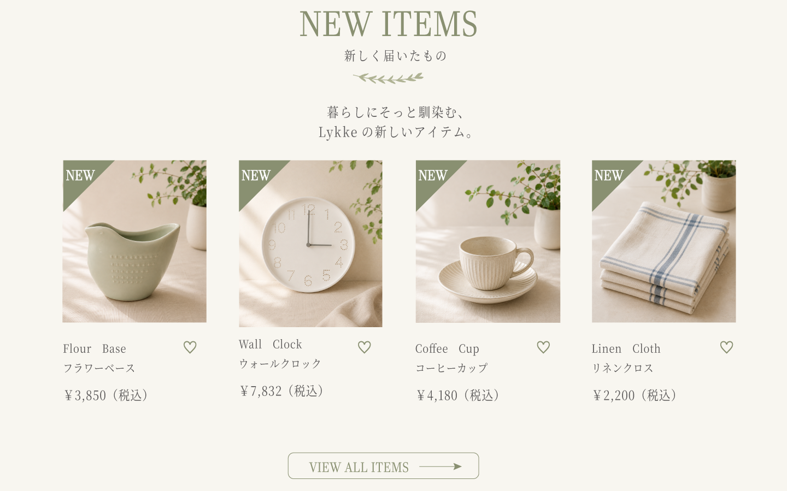
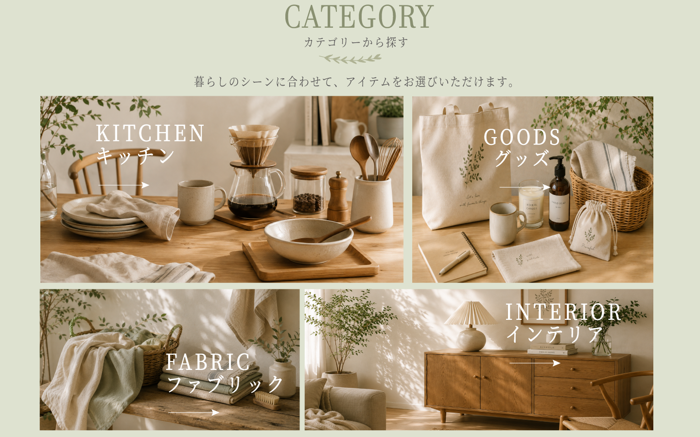
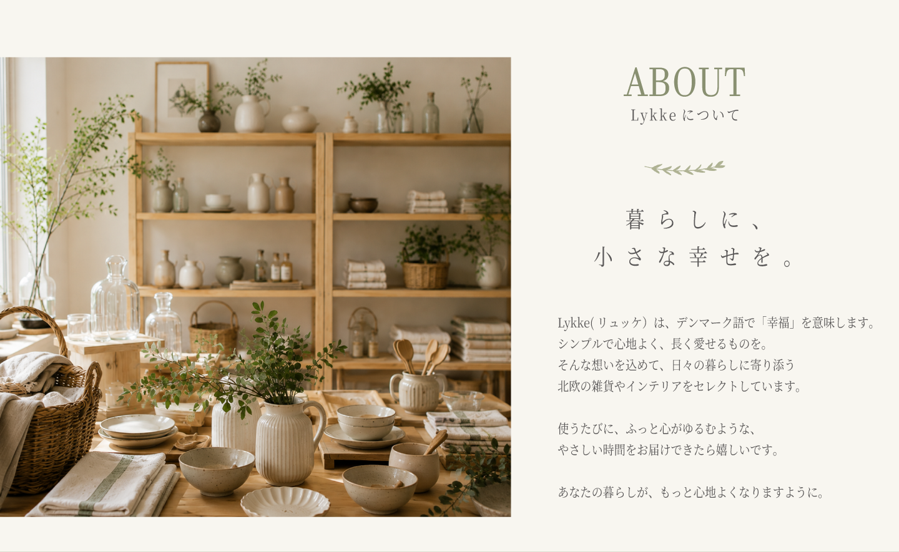
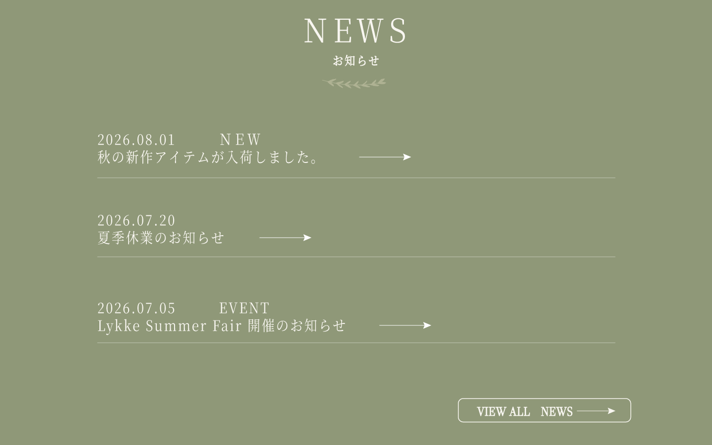
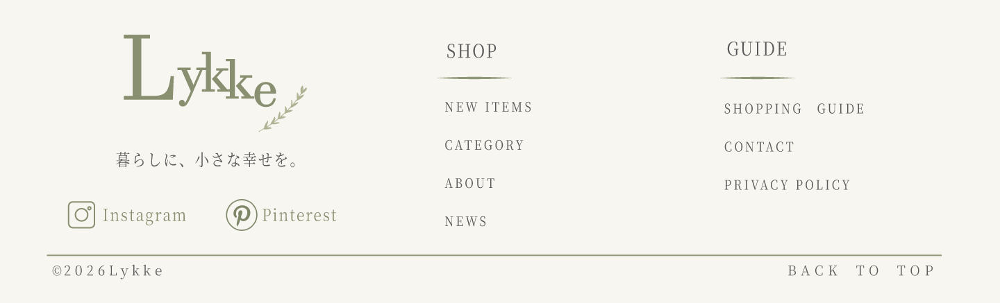
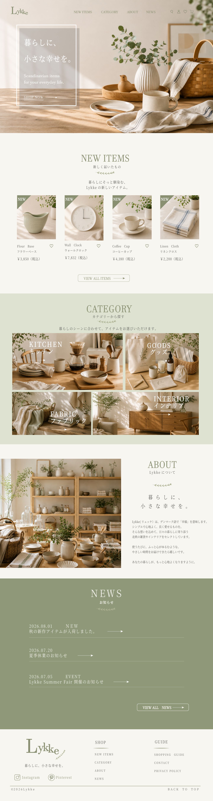

01
FIRST VIEW
ファーストビュー
北欧雑貨のある暮らしをイメージできる写真を大きく使用し、 ブランドの第一印象が伝わる構成にしました。 くすみグリーンとアイボリーを基調に、 落ち着きと温かみのある雰囲気を表現しています。

北欧雑貨を扱う架空のECサイト 「Lykke（リュッケ）」をデザインしました。
「暮らしに、小さな幸せを。」をコンセプトに、 自然素材の温かみや、日々の暮らしに寄り添う やさしい世界観を意識しています。
ファーストビュー
北欧雑貨のある暮らしをイメージできる写真を大きく使用し、 ブランドの第一印象が伝わる構成にしました。 くすみグリーンとアイボリーを基調に、 落ち着きと温かみのある雰囲気を表現しています。
新着商品
商品を見つけやすい4列構成とし、 商品写真の色調や光の雰囲気を揃えることで、 ショップ全体の統一感を意識しました。

カテゴリー
KITCHEN・GOODS・FABRIC・INTERIORの4カテゴリーを、 写真の大きさや配置に変化をつけてレイアウトしました。 商品を探す楽しさと、ページ全体のリズムを意識しています。

Lykkeについて
ブランドの世界観やコンセプトが伝わるよう、 大きな写真と余白を活かしたシンプルな構成にしました。 商品だけでなく、暮らしそのものを提案するショップを イメージしています。

お知らせ
写真を使わず、文字・罫線・余白のみで構成しました。 深めのセージグリーンを背景に使用することで、 ページ全体にメリハリを持たせています。

フッター
ロゴ・ナビゲーション・SNS・コピーライトを シンプルにまとめました。 ページの最後を静かに締めくくるよう、 アイボリーの背景と余白を大切にしています。

サイト全体
各セクションの役割を意識しながら、 ファーストビューからフッターまで 一貫した世界観になるようデザインしました。
